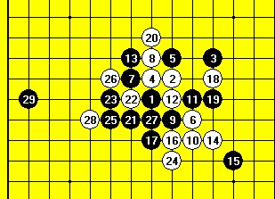
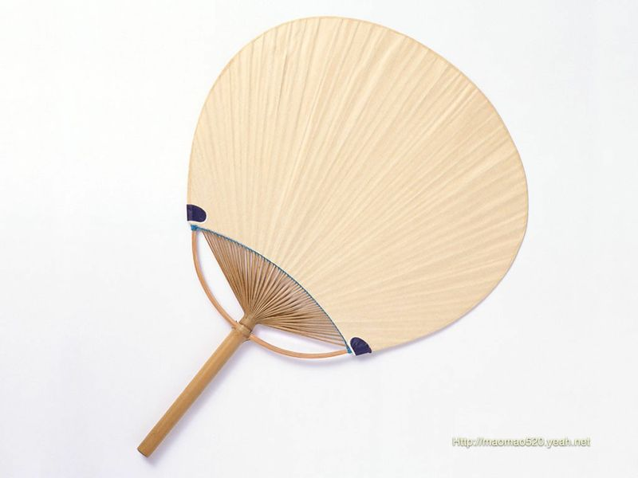

黑石大哥走的神之一手
#1 黑石大哥走的神之一手 作者：越狱行辕 发表时间：2009-6-5 16:06:33
=======上图对应的爱五子棋谱代码如下，以便你拆解：========
h8h9i7g9i9g7g10i10j8g8f7h10f8k10f6f5j11h11j9j10l10k9f9f10i11e13
======================================================
太令人惊叹了！！虽然不是唯一杀法，但这个杀实在是太精彩了。。。。我实在理解不上去
就是看着太帅了。膜拜一下
［ 茗弈小刀 于 2009-6-5 18:22:34 时花20金币送鲜花一朵］
［ 撒蓉儿 于 2009-6-6 11:07:58 时花20金币送鲜花一朵］
#2 Re:黑石大哥走的神之一手 作者：岳麓小棋后 发表时间：2009-6-5 16:12:54
提子战术吧，好象也叫手杖，不清楚怎么表达了，一般出现在胶着战中吧，不知道在哪里看过，这类的棋型挺多的，貌似天元子写过这类东西：一个子飘出去可以把整只冰冻的鸡都取出来，有点类似手杖，可以理解为广义上团角，空间上的团角。［ 茗弈小刀 于 2009-6-5 18:22:23 时花20金币送鲜花一朵］
#3 Re:黑石大哥走的神之一手 作者：越狱行辕 发表时间：2009-6-5 16:14:22
。。。主要是这手出去是杀，不只是飘而已#4 Re:黑石大哥走的神之一手 作者：不知 发表时间：2009-6-5 16:16:31
 飘过...好棋..
飘过...好棋..
#5 Re:黑石大哥走的神之一手 作者：岳麓小棋后 发表时间：2009-6-5 16:16:39
恩，我说的飘就是杀的意思，就是我们看上去是飘，其实它杀了
胶着战包饺子战中经常出现这样的杀法，一个棋型黑大优，然后一直被白做外围，最后黑突然向白的外围飘了一手，被白包围的里面整只冰冻的鸡一下就被解冻了
#6 Re:黑石大哥走的神之一手 作者：安娜制作所 发表时间：2009-6-5 16:18:48
嗯,说的不错#7 Re:黑石大哥走的神之一手 作者：越狱行辕 发表时间：2009-6-5 16:19:23
郁闷我是想不到这种棋了
感觉太神奇了，实战要是能下出这么一手太帅了。
仔细想想好像有点懂
这点其实 是为下一手做铺垫
白的下一手有两种进攻手段 D12 E11 或者F13所以没防了 感觉，，，黑石太猛了。。
#8 Re:黑石大哥走的神之一手 作者：忧郁的双眼 发表时间：2009-6-5 16:38:20
黑石只算了五秒。。。
#9 Re:黑石大哥走的神之一手 作者：屏蔽 发表时间：2009-6-5 16:38:23
这个和向外飘不是一个概念吧
现在黑棋没有VCT，白棋做了一手，有VCT，应该是从这个角度来理解的。
不过做棋确实挺远的，不错，嘿嘿。
［ 茗弈小刀 于 2009-6-5 18:33:38 时花20金币送鲜花一朵］
#10 Re:Re:黑石大哥走的神之一手 作者：岳麓小棋后 发表时间：2009-6-5 16:43:10
=======上图对应的爱五子棋谱代码如下，以便你拆解：========
h8i9h6g8h7h5i7j6j8k9g7f7h9h10i5j4g6f5f9
======================================================
原理有点像这个19手。
论坛战的这个29也是一个道理吧，
#11 Re:黑石大哥走的神之一手 作者：越狱行辕 发表时间：2009-6-5 17:10:54
这手还妙在 他并没有做杀！！#12 Re:黑石大哥走的神之一手 作者：茗弈小刀 发表时间：2009-6-5 18:35:26
小棋后妹妹说得很生动具体清楚，屏蔽老师补充得也很好，做这样的棋有个前提，那就是对手没有VCT.
#13 Re:黑石大哥走的神之一手 作者：方圆之外 发表时间：2009-6-5 21:24:06
这手棋放那儿让人研究。可能没多大让人惊叹的。。
不过真要是实战能下出来这一手。绝对是精彩~！
#14 Re:黑石大哥走的神之一手 作者：岳麓小棋后 发表时间：2009-6-5 21:56:15
=======上图对应的爱五子棋谱代码如下，以便你拆解：========
h8i9g7h9j9i10i8g8j11h7f9j8g11f10i12h10g10h11j12h12h13k10l10j13k11i13g14f15k5
======================================================
斜一这个传说29应该也是一个思路的
#15 Re:黑石大哥走的神之一手 作者：wrwak 发表时间：2009-6-5 22:05:23
不是那么简单的，要我来说，首先是和1手的连接白棋j6必然了 否则被黑拿到白棋被动防里面后面可想而知，对于白棋冲四都能和26形成2，此29主要目的是为左边攻击做准备的，31 一下去 白棋防守都是基本唯一的 而且必定落在右边32 N8 是强防之一，切断右边冲4的可能性 不过这离29 31太远 不堵住这里的2 ，虽然团5L是直接无杀 ，但是只要33一下 黑左右呼应，不论白棋如何防守黑都会在左右成杀不要忘记 27 13 17这里上面得东西也是可以左右呼应的。黑33之后有不少是左边攻击后团L5 右边就能杀了。32 m7 第二个强放 但是没有防住冲4 黑继续在盖一首白棋之前没管到冲4，只能猥琐的挡在L5 右边角落里。之后黑i4 拓展后 舒服的很 必胜了！
［ 茗弈小刀 于 2009-6-6 10:04:40 时花20金币送鲜花一朵］
#16 Re:黑石大哥走的神之一手 作者：歇菜了 发表时间：2009-6-5 22:52:45
斜月的这个29和楼主发的这个白完全是两个概念好吧,我觉得斜月一打29算妙手了,如果没拆过下出来基本不太可能,但是楼主发的这个,最多也只能算好棋.称不上妙手吧,黑一点东西都没有,让白做棋.我觉得高手应该都能想到,不过我这么弱估计实战还是想不出
顺便发个我看别人实战下出来的棋,如果妙手真的那么好下的话,那实战下妙手的多了
=======上图对应的爱五子棋谱代码如下，以便你拆解：========
h8i9j6g9j9g8i10h11g10h10f8e12
======================================================
［ 茗弈小刀 于 2009-6-6 10:04:16 时花20金币送鲜花一朵］
#17 Re:黑石大哥走的神之一手 作者：岳麓小棋后 发表时间：2009-6-5 23:29:09
是从手杖角度来讲的，斜一这个棋型这个29不也是想把那团黑的被冰冻的鸡解冻出来吗，咯，理解不来，怎么是两个概念了，手杖点往往是解开一个凝着局面的关键
=======上图对应的爱五子棋谱代码如下，以便你拆解：========
h8h9h6i10i6i9g9g8j11i7g6f6i8k8
======================================================
这个14也有手杖点的味道
=======上图对应的爱五子棋谱代码如下，以便你拆解：========
h8h9h6i9i7j8k7j6j7h7g9g8i10i6f9f10e7
======================================================
这个17也是
当然以上纯属一家之言，许多观点有待时间和意识淘汰，或者叫扇子点，更好

恰当的扇柄点可以让扇子轻松舞动起来
#18 Re:黑石大哥走的神之一手 作者：陨落之城 发表时间：2009-6-5 23:50:12
好有趣的比喻#19 Re:黑石大哥走的神之一手 作者：不知 发表时间：2009-6-5 23:50:53
保持飘过状态..
#20 Re:黑石大哥走的神之一手 作者：傀儡 发表时间：2009-6-6 8:43:15

#21 Re:黑石大哥走的神之一手 作者：屏蔽 发表时间：2009-6-6 9:59:07
越说越玄乎了……
=======上图对应的爱五子棋谱代码如下，以便你拆解：========
h8i9h6g8h7h5i7j6j8k9g7f7h9h10i5j4g6f5f9
======================================================
这一手不错，是妙手；
=======上图对应的爱五子棋谱代码如下，以便你拆解：========
h8i9i8g8h7j8j9g6h10h9i10g10g9i11k8l7h12
======================================================
这一手也不错。
上面两手都是把看似处于重重包围之中的棋盘活的下法。
但是本帖中涉及的其他下法，无非是在开阔的地方与已有线路连接做棋罢了。
位置比较远是他们显得比较NB的关键。
这两种下法应该完全是不同的类型吧。
［ 撒蓉儿 于 2009-6-6 11:13:53 时花20金币送鲜花一朵］
#22 Re:黑石大哥走的神之一手 作者：撒蓉儿 发表时间：2009-6-6 11:06:38
引用：原来这就是传说中的飘啊
原文由 越狱行辕 发表于 2009-6-5 16:06:33 :
=======上图对应的爱五子棋谱代码如下，以便你拆解：========
h8h9i7g9i9g7g10i10j8g8f7h10f8k10f6f5j11h11j9j10l10k9f9f10i11e13
======================================================太令人惊叹了！！虽然不是唯一杀法，但这个杀实在是太精彩了。。。。我实在理解不上去
就是看着太帅了。膜拜一下
［ 茗弈小刀 于 2009-6-5 18:22:34 时花20金币送鲜花一朵］

#23 Re:黑石大哥走的神之一手 作者：岳麓小棋后 发表时间：2009-6-6 12:43:46
论文答辩中，晚上回来再叙，
事实上，这是我解释给我自己听的，我自己并不觉得哪里有错，并不认为很玄乎，很玄吗？打个比喻不是应该更形象吗？怎么倒更玄了？
#24 Re:黑石大哥走的神之一手 作者：岳麓小棋后 发表时间：2009-6-6 19:54:13
咯，貌似也没什么可说的，答辩结束了，突然有点感伤。。。
大学的开始与结束竟然如此相像，我的大学从军训中开始，那时的教官太“坏”了，整天“残忍地虐待”我们，除了在拉歌和连长营长面前服帖外，这个教官一碰到我们似乎就像一只饥饿的狼突然见到一大群的小绵羊一样的兴奋。。。直到军训快结束，这个教官那天突然严厉地对我们发起火来，并恐吓我们，说我们训练了这么久，连队列都走不好，军体拳打的乱七八糟的，并下了戒严令：接下来谁走队列、踢正步、军体拳再出岔子的话就安排他到加强排去，好好地去加班加点的学好！因为这句话，害的我们接下来训练都生怕出漏子，不过还是有人被抓到加强排去了，没被挑中的有点庆幸，被挑中的暗叫苦不已。。。等被挑去的人越来越多时，我们才感觉有点不对劲，被挑去的这些人其实都是一些表现很好的人。。。我们想避开的耻辱其实正是荣誉的象征，几天后的军训结束大会，代表我们院的这个加强排在与其他院的军训生比赛中取得全校第2名的好成绩。
大学的结束，从毕业论文写作开始就分秒地倒计时了，导师们在给我们做辅导时总要提起一件很残忍的事，最后的毕业论文答辩，每个导师的学生都要推出优辩和差辩，你们如果不努力，就将进入差辩，今天的论文答辩结束了，我们一直悬在心头的优辩生会是谁、差辩生会是谁的念头终于落下了，也终于明白了，原来的差辩生其实也是个“残忍”的幌子，今天的差辩生为0个，意味着大家都可以毕业了，当然还是要恭喜那些进入优辩的同学，。。。大家都很努力，导师们的用心也是很良苦的，大家最后好好聚聚吧！
过不了几天，就要举行毕业典礼欢送会了，那时带上学士服的我们，是不是也会像四年前送别教官们离去时眼有噙泪、依依不舍地与我们的老师、我们的同学告别呢？
将别福大
悄悄是别离的笙萧
夏虫也为我沉默
沉默是今晚的福大
#25 Re:黑石大哥走的神之一手 作者：无量爱 发表时间：2009-6-6 21:10:16
这样的 也叫难想。。。